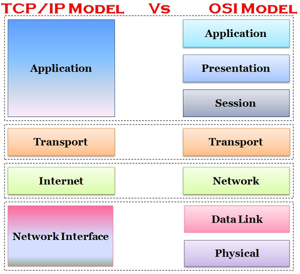

Network protocols. REST API
by Andrei Savelyev
Network protocols
OSI Model
OSI vs TCP/IP
Application Layer
DNS - converts domain names into IP addresses
HTTP - way to send resources that power the web (HTML, CSS, JSON. etc.)
FTP - way to get files onto and off of a server
SSH - way to manage a remote computer over the network
TSL/SSL - network traffic encryption protocol
Transport Layer
TCP - suited for applications that require high reliability and transmission time is relatively less critical
UDP - suitable for applications that need fast transmission such as games
Network Layer
IPv4 - 32 bits long, e.g. 216.33.144.12
IPv6 - 128 bits long, e.g. 2001:0db8:85a3:0000:0000:8a2e:0370:7334
Physical Layer
Protocols that operate only on a link - the network component that interconnects nodes or hosts in the network. E.g. Ethernet or ARP
REST API
API - Application Programming Interface
REST - Representational State Transfer

Methods
Get - provides a read only access to a resource
Post - used to create a new resource
Delete - used to remove a resource
Put - used to update an existing resource or create a new one
OpenWeatherMap example
OpenWeatherMap example
Get Key - register on the website to get a key
Make a Request:
{"coord":{"lon":-0.13,"lat":51.51},
"weather":[{"id":300,"main":"Drizzle",
"description":"light intensity drizzle"}],"base":"stations",
"main":{"temp":280.32,"pressure":1012,"humidity":81,
"temp_min":279.15,"temp_max":281.15},
"visibility":10000,"wind":{"speed":4.1,"deg":80},
"clouds":{"all":90},"dt":1485789600,
"sys":{"type":1,"id":5091,"message":0.0103,
"country":"GB"}